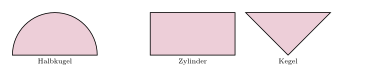

Aufgabe 7.8
Schauen Sie sich das Video mit dem Umschüttversuch an und leiten aus dem dort dargestellten Zusammenhang das Volumen einer Kugel her.
- Der Umschüttversuch zeigt eine Volumengleichheit
- Nutzen Sie bekannte Formeln für Zylinder und Kegel
- Die Halbkugel hat welches Volumen?
- Verdoppeln Sie für die ganze Kugel

Alle drei Körper haben den Radius $r$, Zylinder und Kegel auch die Höhe $r$. Der Umschüttversuch zeigt \[V_{\text{Halbkugel}} = V_{\text{Zylinder}} - V_{\text{Kegel}}.\] Mit $V_{\text{Zylinder}} = \pi r^2\cdot r = \pi r^3$ und $V_{\text{Kegel}} = \frac13\pi r^2\cdot r = \frac13\pi r^3$ folgt \[V_{\text{Halbkugel}} = \pi r^3 - \tfrac13\pi r^3 = \tfrac23\pi r^3, \qquad V_{\text{Kugel}} = 2\cdot\tfrac23\pi r^3 = \tfrac43\pi r^3 .\]